A continuación vamos a exponer el procedimiento de backups con la herramienta RMAN.
BACKUP COMPLETO
Para hacer un backup completo, es decir, de todos los archivos de la base de datos, seguimos el siguiente procedimiento:
Estando en RMAN, digitamos el comando BACKUP DATABASE;
De esta manera se hace un backup completo de la base de datos.
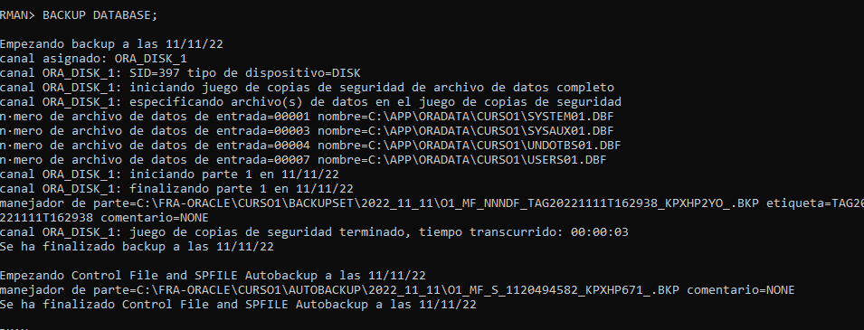
En la información que aparece al hacer el backup , hay información muy útil y valiosa. Analicemos:
Cuándo fue hecho el backup.....
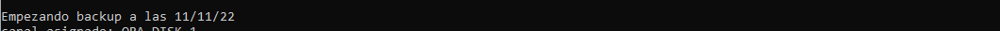
El backup se va a hacer en disco.....
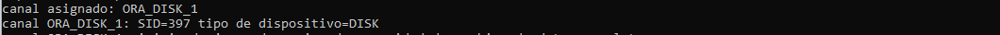
El backup se va a hacer en el formato backupset (es el default). Backupset, en español, es juego de copias de seguridad.
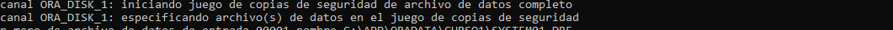
Especifica cuáles son los archivos a los cuales les va a hacer backup.
Dice que los cuatro archivos anteriores se grabaron en un solo piece (parte) backupset. Recordar que un backupset se compone de pieces.
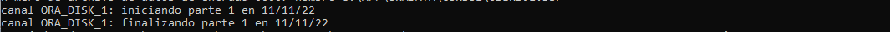
Especifica que el backup se hizo en la FRA, que en este caso es en la carpeta FRA-ORACLE del dispositivo C: de Windows.
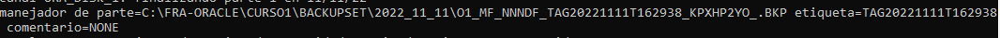
El backup se hizo en 3 segundos.
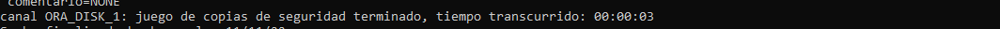
Y siempre que se hace un backup completo, automáticamente se hace un backup del Control File y del SPFILE. Este backup se hace en otra carpeta diferente al backup de los archivos de datos, pero dentro de la FRA.
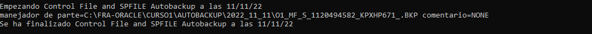
Si revisamos la FRA, vemos que ya hay un backup.
Dentro de la FRA de la base de datos CURSO1, vemos dos carpetas:
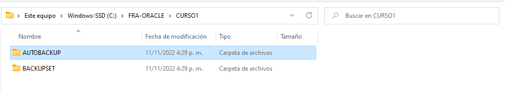
BACKUPSET, donde se hizo el backup de los archivos de la base de datos.
Podemos observar que es un solo archivo, con un nombre "raro", y que coincide con el nombre que salió al hacer RMAN. (Ver imágen anterior).
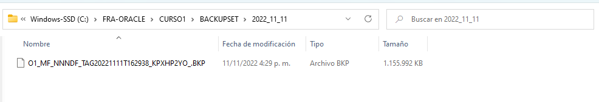
Y AUTOBACKUP que es donde RMAN hace backup del Control File y del SPFILE.
El nombre del archivo, el cual también es un poco "raro", debe coincidir con el que salió al ejecutar el backup.
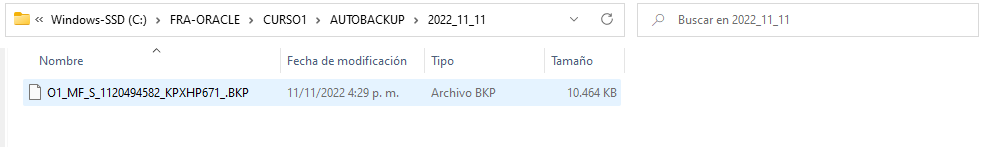
Información detallada de los backups
En RMAN hay una serie de comandos que nos permiten mirar, en detalle, la información de los backups que se han hecho hasta el momento.
El primer comando es LIST BACKUP SUMMARY, el cual muestra un resumen de los backups hechos. Podemos observar los dos backups que se han hecho hasta el momento, el de los archivos y el del control y SPFILE, son en formato backupset (B), son completos (F), fecha de realización de cada backup, el número de parte(piece) de dicho backup y el TAG asignado a cada backup, el cual se corresponde con el mostrado cuando se hizo el backup.
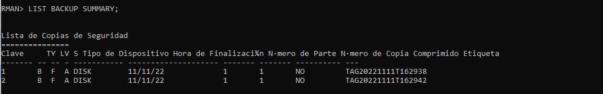
El siguiente comando es el LIST BACKUP, el cual da una información más detallada de cada backup hecho. Muestra que nuestro primer backupset tiene código 1, es completo, su tamaño es 1.10 gigas, fue hecho en disco, es un backup que está disponible, muestra su tag, y luego muestra los archivos a los cuales se les hizo backup y que están incluidos en ese backupset. La misma información entrega con el backupset 2, el cual es el del Control File y SPFILE.
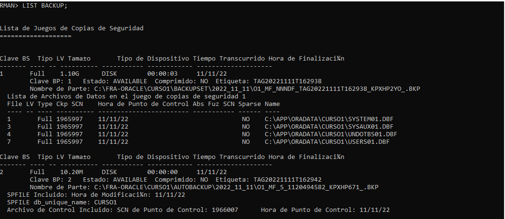
Y el tercer comando es LIST BACKUP BY FILE, el cual muestra el detalle de los backups hechos, discriminados por tipo de archivos. El primer grupo de archivos son los archivos de datos, el segundo es el de los Control Files y el tercero es el de los SPFILES. Este comando especifica cada archivo a que backupset pertenece, cuál es el TAG de dicho backupset, a qué parte (piece) de ese backupset corresponde, entre otras cosas.
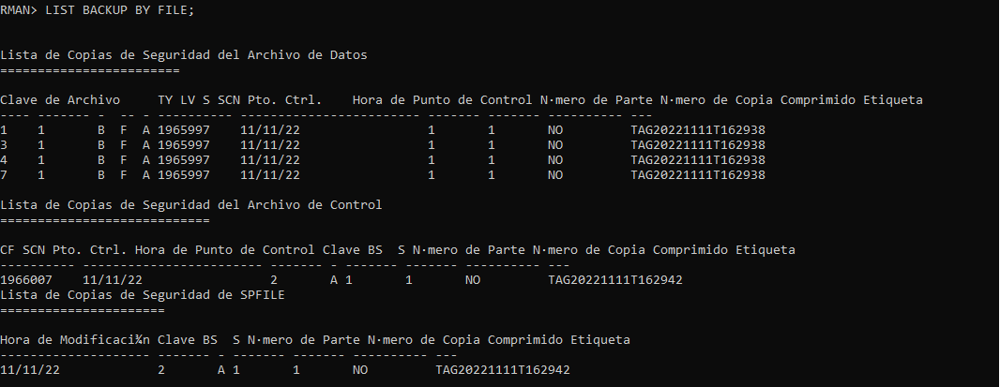
Existen otros comandos útiles que se van a ir viendo en los temas subsiguientes.
Video: